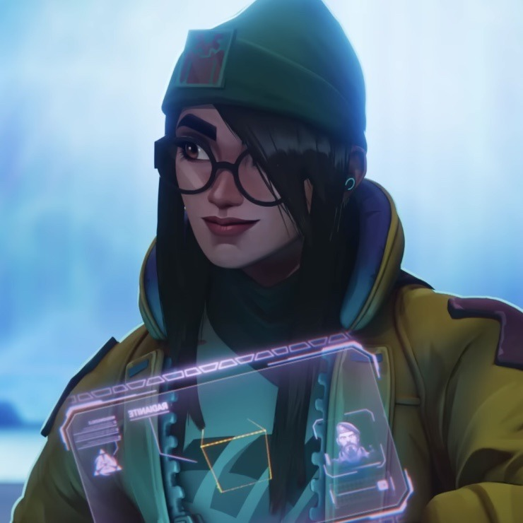

Em um mundo onde a habilidade e a inteligência são cruciais para a vitória, Killjoy se destaca como uma das agentes mais formidáveis de Valorant. Seu nome verdadeiro é Kira Meuller, uma jovem prodígio da tecnologia, nascida e criada em Berlim, Alemanha. Desde cedo, Kira demonstrou um talento excepcional para a engenharia e a programação, fascínio que a levaria a se tornar uma figura indispensável no universo das forças especiais. Kira Meuller cresceu em um ambiente cercado pela inovação. Seus pais, ambos engenheiros, incentivaram seu interesse pelas ciências exatas e pela tecnologia. Ainda na adolescência, Kira já havia desenvolvido diversos dispositivos inovadores, destacando-se no cenário acadêmico e científico. Sua paixão pela programação se manifestou desde cedo, e ela rapidamente se tornou uma expert em criar algoritmos complexos e soluções tecnológicas que deixavam até os especialistas mais experientes impressionados.
Com o surgimento das Radiants – indivíduos dotados de habilidades especiais devido à exposição ao Radianite – o mundo mudou de forma irreversível. Kira, fascinada pelo potencial dessas novas habilidades, decidiu que queria fazer parte dessa nova era. Ela não possuía poderes sobrenaturais, mas sua mente brilhante e suas criações tecnológicas a tornaram uma candidata perfeita para a equipe de agentes do Valorant Protocol, uma organização dedicada a enfrentar ameaças globais emergentes. Como Killjoy, Kira trouxe para o Valorant Protocol um arsenal de dispositivos tecnológicos que redefiniram o campo de batalha. Suas invenções incluem a Torreta, que automaticamente dispara contra inimigos próximos; a Nanoswarm, uma granada que libera um enxame de nanobôs capazes de dizimar qualquer oponente desavisado; e o Alarmbot, um robô furtivo que rastreia e revela a posição dos inimigos. Seu equipamento não apenas demonstra sua genialidade, mas também sua capacidade de prever e controlar o ambiente de combate de forma estratégica.
A programação não é apenas uma habilidade para Killjoy; é sua paixão e seu meio de expressão. Ela vê a programação como uma arte, onde cada linha de código é um traço que compõe um quadro maior. A criação de novos dispositivos e a otimização de suas funcionalidades são atividades que ela realiza com entusiasmo e dedicação. Para Killjoy, não há maior satisfação do que ver suas criações em ação, contribuindo para a vitória de sua equipe e a proteção do mundo contra ameaças. O futuro de Killjoy é promissor e cheio de possibilidades. Ela continua a aprimorar suas invenções e explorar novas fronteiras da tecnologia, sempre buscando maneiras de tornar o mundo um lugar mais seguro. Sua paixão pela programação e pela inovação tecnológica a mantém em constante evolução, e seus colegas sabem que podem contar com sua genialidade para superar qualquer desafio.
Killjoy não é apenas uma agente; ela é a personificação do potencial humano quando aliado à tecnologia. Sua história é um lembrete de que, mesmo em um mundo onde os poderes sobrenaturais existem, a verdadeira força reside na inteligência, na criatividade e na paixão.
Feito por: Letícia Pinheiro.